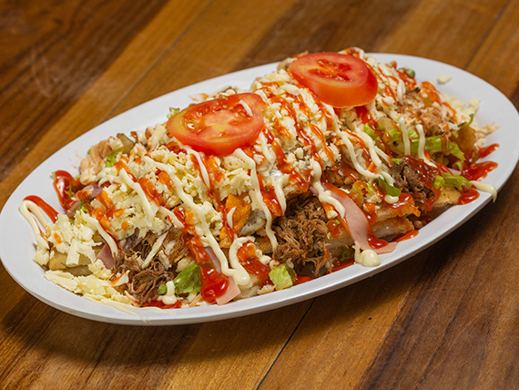
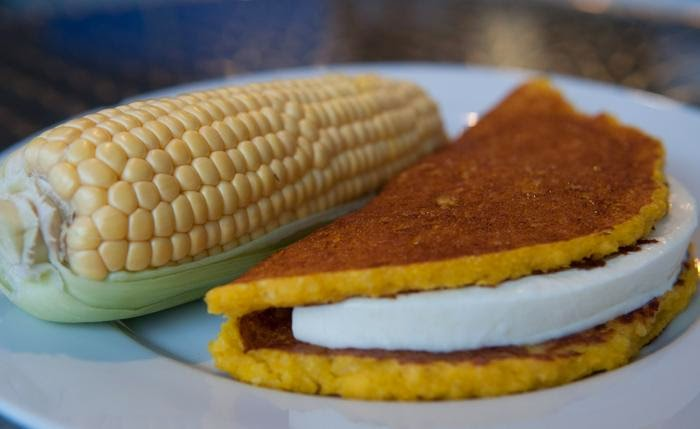

Arepa Cabimera
11.04.2019

Ingredientes:
- Harina de Maíz (1 kg aprox.)
- Agua
- Sal
- Aceite (para freír)
- Carne desmechada
- Pollo a la plancha picadito
- Huevo cocido
- Aguacate
- Verduras picadas (Zanahoria rallada, repollo picado finamente)
- Salsa de Tomate
- Mayonesa
- Salsa Tártara
- Queso de año
- Jamón
Paso 1:
Se debe colocar en un bol la harina de maíz y sal, luego poco a poco vamos agregando agua hasta conseguir una mezcla de suave consistencia con la que podamos dar una forma redondeada.
Al obtener la consistencia deseada se toma una porción de la mezcla y se le da la forma de la arepa, luego la misma se coloca en una sartén con aceite previamente caliente hasta que por ambos lados quede bien tostada.
Luego de freír las arepas las mismas deben cortarse en cuadritos.
Paso 2
Este paso es el más divertido y con mucho sabor, haremos una combinación de proteína (pollo y carne). Se tiene ya preparado lo que va a acompañar la arepa, en nuestro caso será pollo a la plancha picado en trocitos y condimentado al gusto del comensal, además de la carne desmechada también condimentada según el gusto.
El aguacate (Palta) y el huevo cocido debe estar picado en tiras, al igual que el jamón.
Paso 3
En este paso vamos a armar o emplatar la arepa Cabimera. Esta arepa es muy particular ya que no se sirve al igual que las tradicionales, en nuestro caso la base será la arepa, colocamos en el plato la arepa picadita recién frita, encima de ella se coloca en las capas que se quiera el pollo picado y la carne desmechada, a esto se le va colocando la salsa tártara, luego se adorna la cima de la arepa con el aguacate, el huevo cocido y el jamón y se le agrega más salsa al gusto, en este caso puede ser mayonesa y salsa de tomate y luego se espolvorea el queso de año por encima.
Cachapa Andina
13.04.2019

Ingredientes:
- 4 tazas de maíz tierno (alrededor de 12 jojotos).
- 3 cucharaditas de sal.
- ¾ de taza de azúcar (o papelón, si gustas).
- 1 taza de leche.
Preparación
Para comenzar, se pelan y desgranan los jojotos hasta obtener unas 4 tazas de maíz y luego hay que molerlo para obtener la base de la mezcla. La verdad, esta parte suele ser la más engorrosa y puede saltarse si se compra la masa previamente molida en algún mercado, pero pensamos que hacerlo con nuestras manos es una experiencia realmente placentera y por ende siempre recomendamos a que se haga así.
Al tener la masa, bien sea hecha por tus propias manos o comprada en el mercado, debes mezclarla con la sal y el azúcar (o el papelón, si optaste por ello), y agregarle la leche para mezclarlo todo en una licuadora hasta conseguir un resultado homogéneo, que esté líquida pero un poco espesa.
Seguidamente, con la ayuda de una cuchara sopera, agrega una porción de la masa en un budare o sartén previamente engrasado con mantequilla o aceite. No olvides regar la mezcla hasta crear esa peculiar forma circular de las cachapas venezolanas.
Déjala cocinar por un rato hasta que se dore la cara que da al budare/sartén y voltéala con sutileza para dorar la otra mitad sin que pierda la forma que ya le diste.
Ya para cuando las dos caras tengan ese dorado especial que a todos nos encanta, retíralas del fuego y listo. ¡Habemus cachapas!
Luego puedes untarle un poco de mantequilla antes de colocarle el queso encima. Y si vas a colocarle jamón también, pues primero colócalo y después agrega el queso.